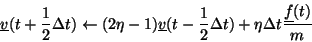
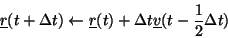
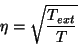
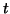
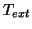

If the system is to be simulated in the NVT ensembe, then the user has the choice of four different algothims, the Gaussian thermostat [16], Berendsen thermostat, the Nose-Hoover thermostat [17] and stochastic boundary conditions [18]. The first of these, the Gaussian constraint thermostat, rescales the velocities of atoms at each timestep to achieve a constant system temperature, however this algorithm will destroy dynamic correlations very quickly. The basic algorithm is detailed below:



Where,  is the temperture at timestep
is the temperture at timestep

(that is calculated self consistently with three iterations) and
is the given system temperature or bath temperature.